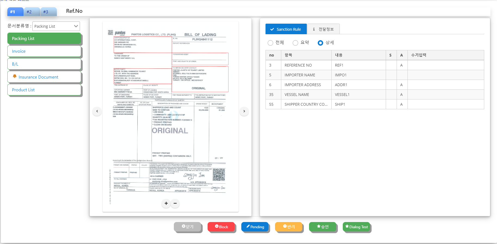
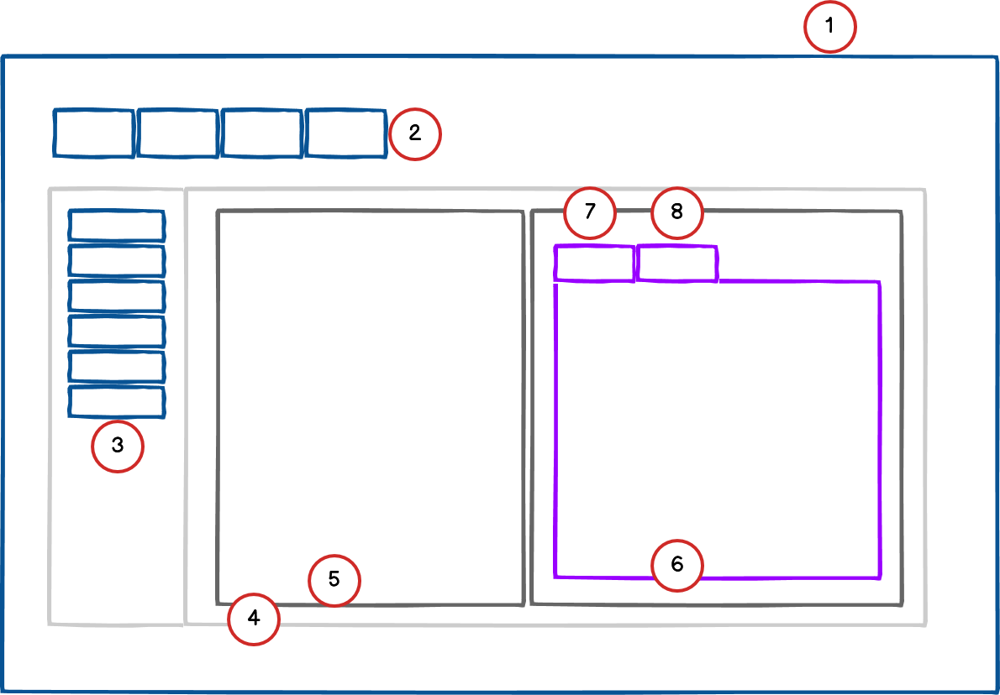

3. X Project (Examination Detail Module) Program


Demo. program : Demo
Program source : Source
Summary
Menu description
- Check the description with the Help button in the program.
- Check the description with the Help button in the program
Applied technology
Component design structure 